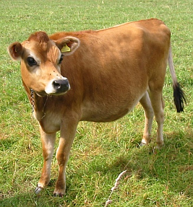

Un villais qu'accate son lait à la boutique qu'est fournie par Maît'e Cliement d'Caen, n'étant pas satisfait d'la qualité de ch't articlye-là, en fit sa pliainte au bouanhomme.
Ch'tis-chin li explitchi que nou n'peut pas soigni ses bêtes comme nou veut au temps qui va.
“Ch'nest pas ch'la du tout,” se fit l'autre. “Ouest qu'ou triyiz vos vaques?...”
“A la terrée, sans doute quand i' fait bé.”
“Sans doute. Mais quand i' tchèt d'la plyie?”
“Je les trais dans l'êtablye.”
“Vaithe! Eh bain, pourtchi qu'ou ne r'gardez pas que la couvertuthe es'sait pus êtanche?”
Lé Caouain
Les Chroniques de Jersey 3/4/1920
Viyiz étout: